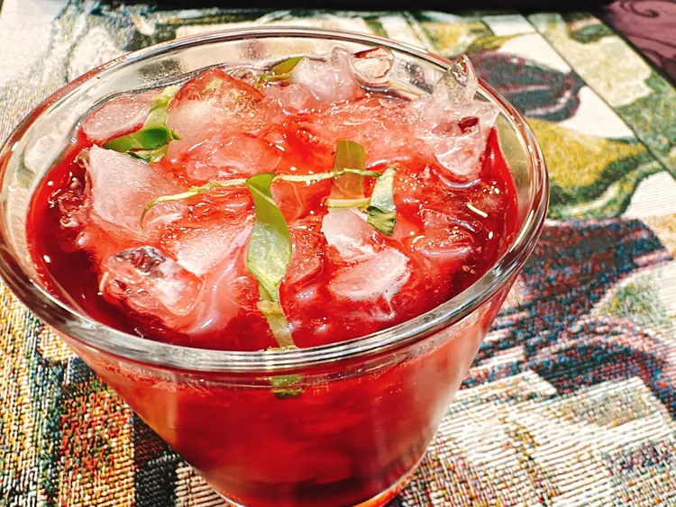

Pomegranate Mocktail
Home
All information courtesy of allrecipes

Description
This pomegranate mocktail, with lime juice and grapefruit lime tepache soda, is refreshing and flavorful.
Ingredients
- 6 basil leaves, plus more for garnish
- 1 fluid ounce lime juice
- 4 fluid ounces pomegranate juice
- 1 fluid ounce grapefruit lime flavor tepache soda (such as De La Calle® Tepache)
Steps
- Place basil and lime juice into a cocktail shaker and mash well with a cocktail muddler. Pour in pomegranate juice; cover and shake well. Strain into a glass with ice, top off with tepache soda, and garnish with freshly torn basil leaves.